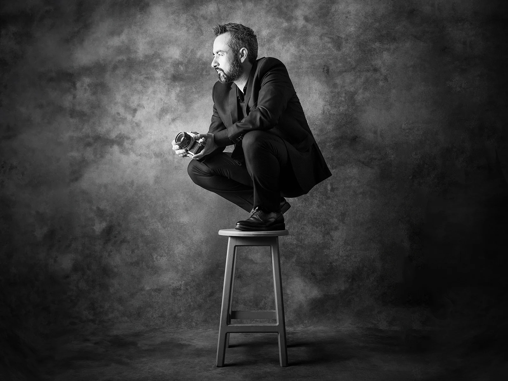

Sobre mí

Iván Villagrana
Fotógrafo y diseñador enfocado en el retrato artístico y los proyectos fotográficos de autor.
Mi trabajo nace del encuentro con las personas y de la manera en que la luz, la expresión y el momento pueden dar forma a una imagen. A través del retrato, la danza y la experimentación en estudio, exploro distintas formas de construir un lenguaje propio.
He representado a México en la Copa Mundial de Fotografía, donde recibí la Medalla de Plata en Retrato en 2022. Mi obra se ha mostrado en el Museo Soumaya, el Hospicio Cabañas y en exposiciones en Berlín y Roma.
También imparto talleres, cursos y conferencias sobre retrato, iluminación y procesos creativos, compartiendo herramientas para que otros fotógrafos desarrollen su propia mirada.
Ver trayectoria